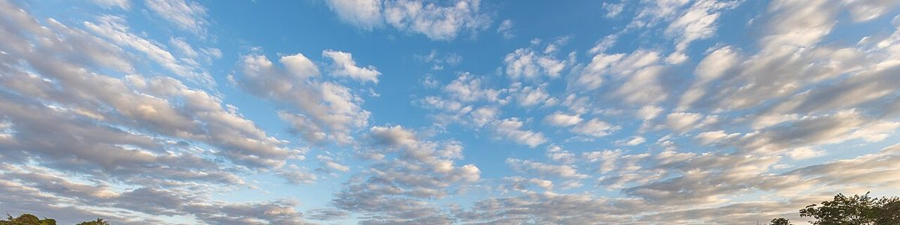
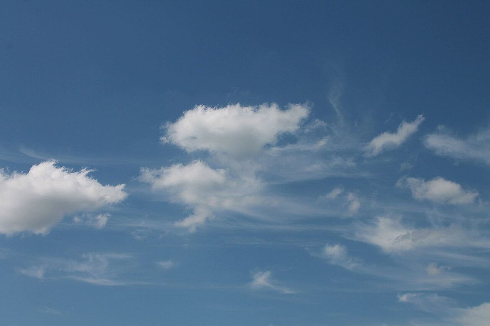
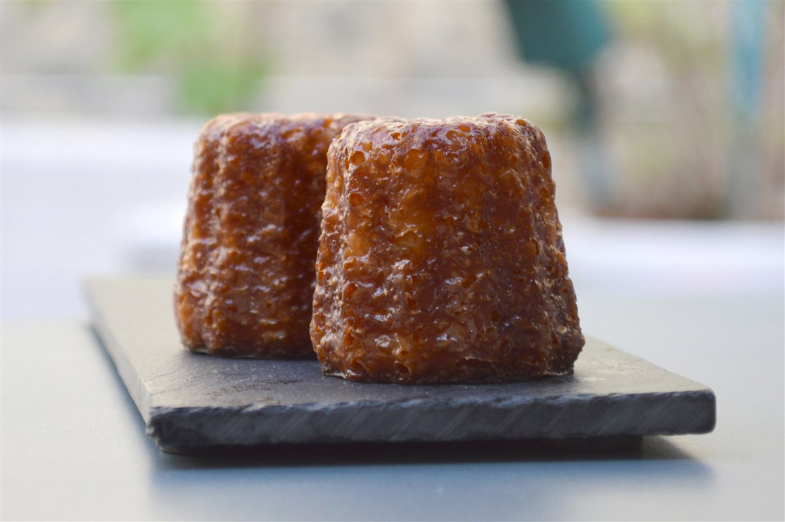
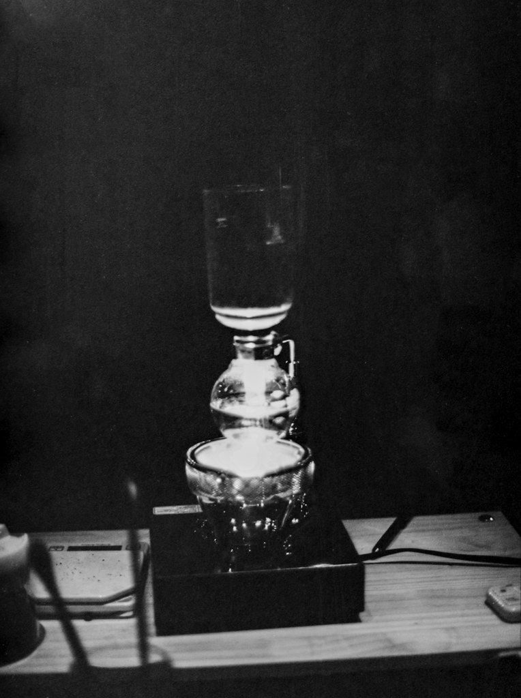
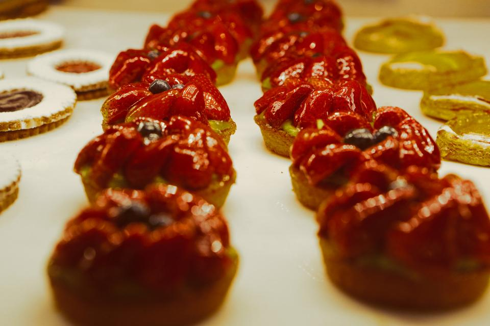
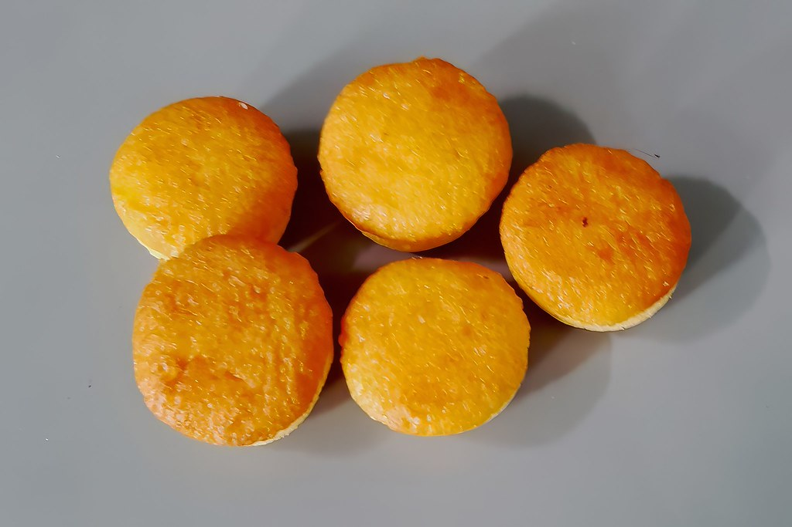
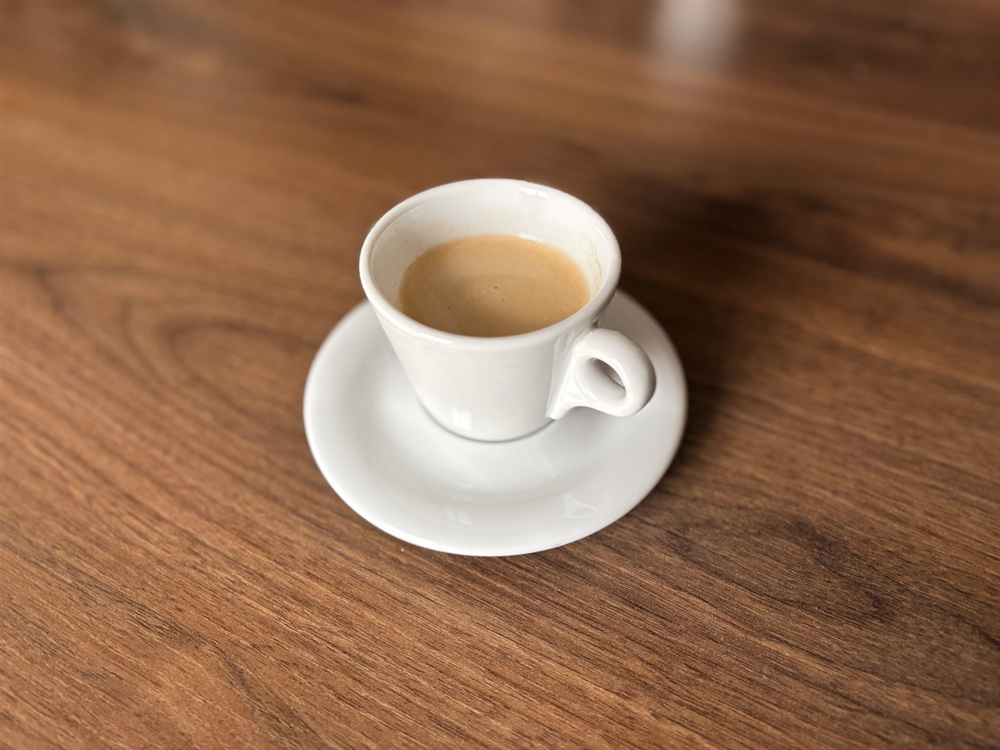

三重県尾鷲市・尾鷲駅のそば
青空のように、
すっと心がほどける甘いひとときを。
ル・シエル・ブルー(Le Ciel Bleu)は、フランス語で「青空」。ケーキと焼き菓子、こだわりのコーヒーが待つ、小さなパティスリー&カフェです。
お店のこと
「青空」の名を持つ、駅前の小さなパティスリー。
グルメサイトの情報によると、ル・シエル・ブルーはJR尾鷲駅から歩いてすぐの場所にあるパティスリー&カフェで、2023年12月16日にオープンしました。店名はフランス語で「青空」の意味とされています。
口コミでは、白で統一された奥に長い店内、ケースに並ぶケーキや焼き菓子、サイフォンコーヒーなどコーヒーへのこだわりが紹介されています。イートインスペースもあります。
オーナーの想いや店名に込められた意図は確認できていません。このページの見出しの言い回しは制作側のイメージです。



メニュー
ケーキ、焼き菓子、そしてコーヒー。
口コミでは、次のようなお菓子が紹介されています。内容は入れ替わることがあります。
写真はすべてフリー素材のイメージで、お店の実際の商品・店内の様子ではありません。










価格・詳しいメニュー: 準備中
口コミ
こんな声が届きそうです。
イメージ例白い店内が明るくて、ケーキを選ぶ時間まで楽しくなりました。
イメージ例焼き菓子をお土産にしたら、家族にも好評でした。
イメージ例コーヒーと一緒にゆっくりできて、駅前で一息つけるのがうれしいです。
上の3件は制作側が作成したイメージ例で、実在のお客様の声ではありません。
アクセス
ご案内
| 所在地 | 〒519-3616 三重県尾鷲市中村町6-49 |
|---|---|
| 電話 | 準備中 |
| 営業時間 | 準備中 |
| 定休日 | 準備中 |
| @le.ciel.bleu_owase |
営業時間・定休日は掲載サイトにより記載が異なるため「準備中」としています。最新情報はInstagramをご確認ください。
写真クレジット
使用した写真
写真はフリー素材のイメージで、店舗の実際の様子ではありません。
- images/cheese.jpg「Basque cheesecake」 Andy Li / CC0 1.0 / creativecommons.org
- images/tarts.jpg「Strawberries Tarts」 Leeroy / CC0 1.0 / creativecommons.org
- images/shortcake.jpg「ショートケーキ」 Shisma / CC BY 4.0 / creativecommons.org
- images/berrytart.jpg「Tart with strawberry and blueberries」 Shisma / CC BY 4.0 / creativecommons.org
- images/coffeecake.jpg「Coffee and coffee cake」 Stephanie McCabe / CC0 1.0 / creativecommons.org
- images/canele.jpg「Canele (DimiTalen)」 DimiTalen / CC0 1.0 / creativecommons.org
- images/cup.jpg「Coffee cup」 Ludwig You / CC0 1.0 / creativecommons.org
- images/madeleine.jpg「Orange bakes」 chooyutshing / Public Domain Mark 1.0 / creativecommons.org
- images/siphon.jpg「Siphon coffee」 Khronos-dolls / CC0 1.0 / creativecommons.org
- images/sky.jpg「Li Phi falls at sunrise with white and grey clouds in Don Khon Laos」 Basile Morin / CC BY-SA 4.0 / creativecommons.org
- images/clouds.jpg「Clouds in the sky in August 2014」 Jakec / CC BY-SA 4.0 / creativecommons.org
- images/macaron.jpg「Macarons on a blue rectangular serving dish」 Jeppestown / CC BY-SA 2.0 / creativecommons.org
- images/cloud.jpg「White Cumulus Clouds against Blue Sky」 Lance Vanlewen / CC BY-SA 4.0 / creativecommons.org
- images/mug.jpg「Bright turquoise mug sits on a wooden table by the window」 Shixart1985 / CC BY 2.0 / creativecommons.org